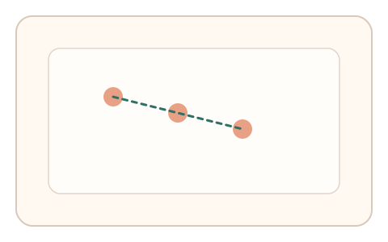
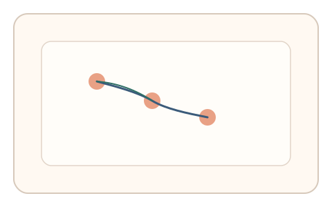
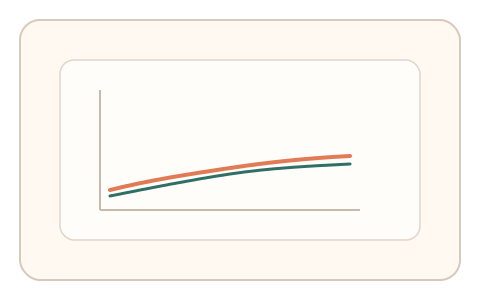

#7
生物肌肉与鼠标运动
已扩展
漂移一致性
连续微动作中捕捉自然漂移与速度微衰减，验证非恒定的人类控制特征。
概念原文
连续进行 3-4 个微动作（短拖拽或点击序列），系统评估“自然漂移”的连续性（如速度微衰减、路径细微变化）。
强调人类动作在短时间内的微小退化/漂移，机器人需模拟“非恒定”才能通过。
研究背景
人类运动控制具有稳定的随机波动与轻微漂移，在短时间序列中往往表现为速度微衰减与路径细微变化。这些“非恒定性”是生理噪声与肌肉控制的共同结果，可作为区分脚本与真实操控的关键特征。
核心机制
- 设计 3–4 个连续微动作（短拖拽或点击序列）。
- 采集每次动作的速度曲线、路径偏移与微漂移量。
- 评估动作间的“渐进漂移”与微衰减趋势。
- 不追求绝对精度，强调非恒定与一致性并存。
用户流程
- 步骤 1：用户完成连续微动作序列。
- 步骤 2：系统记录每次动作的轨迹与时序。
- 步骤 3：系统评估漂移一致性并输出判定。
判定信号
速度微衰减趋势
短时间内的自然衰减是人类运动控制常见特征。
动作间路径偏移与微漂移
真实操控会出现连续但轻微的漂移。
判定逻辑
计算序列内的漂移方向与幅度，要求呈现轻微但连续的非恒定变化；若轨迹过度稳定或完全随机则判异常。
对抗面
- 脚本注入随机漂移模拟人类波动
- 回放采集到的真实序列轨迹
防御与缓解
- 随机任务顺序与目标位置，降低重放价值
- 结合微抖动频谱与反应时进行多信号耦合
- 对漂移过度一致或过度随机的模式进行异常检测
可达性与风险
允许用户降低动作速度并放宽漂移窗口，为精细操作困难用户提供更宽松阈值。
- 短时间过长可能引发疲劳
- 设备平滑或采样不足会削弱漂移信号
可视化状态

状态 1：连续微动作
短序列微动作任务，强调连续性。

状态 2：漂移轨迹
动作间出现轻微路径漂移与速度衰减。

状态 3：一致性判定
评估漂移趋势与非恒定性窗口。
参考资料
Motor variability
说明运动过程中的自然波动与变异。
Motor control
说明人类运动控制的生理基础。